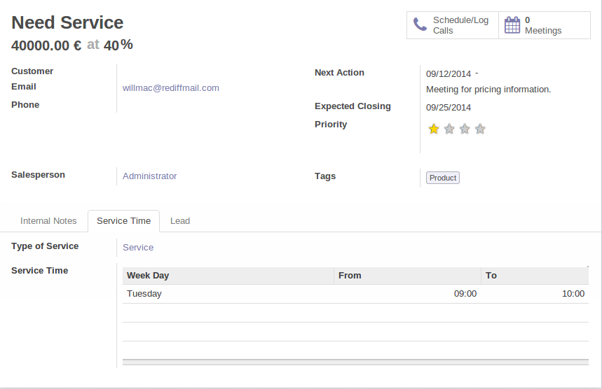

<section class="oe_container">
    <div class="oe_row oe_spaced">
        <div class="oe_span12">
            <h2 class="oe_slogan">Calendar Service CRM</h2>
            <h3 class="oe_slogan">Calendar Service Management and CRM integration</h3>
        </div>
        <div class="oe_span6">
            <div class="oe_bg_img">
                
            </div>
        </div>
        <div class="oe_span6">
            <p class="oe_mt32">
Integrates Calendar Service and CRM. You can manage your opportunities
for calendar services, assign client desired times for service and then
relate it with specific calendar service.
            </p>
            <div class="oe_centeralign oe_websiteonly">
                <a href="http://www.oerp.eu/#trial" class="oe_button oe_big oe_tacky">Start your <span class="oe_emph">free</span> trial</a>
            </div>
        </div>
    </div>
</section>